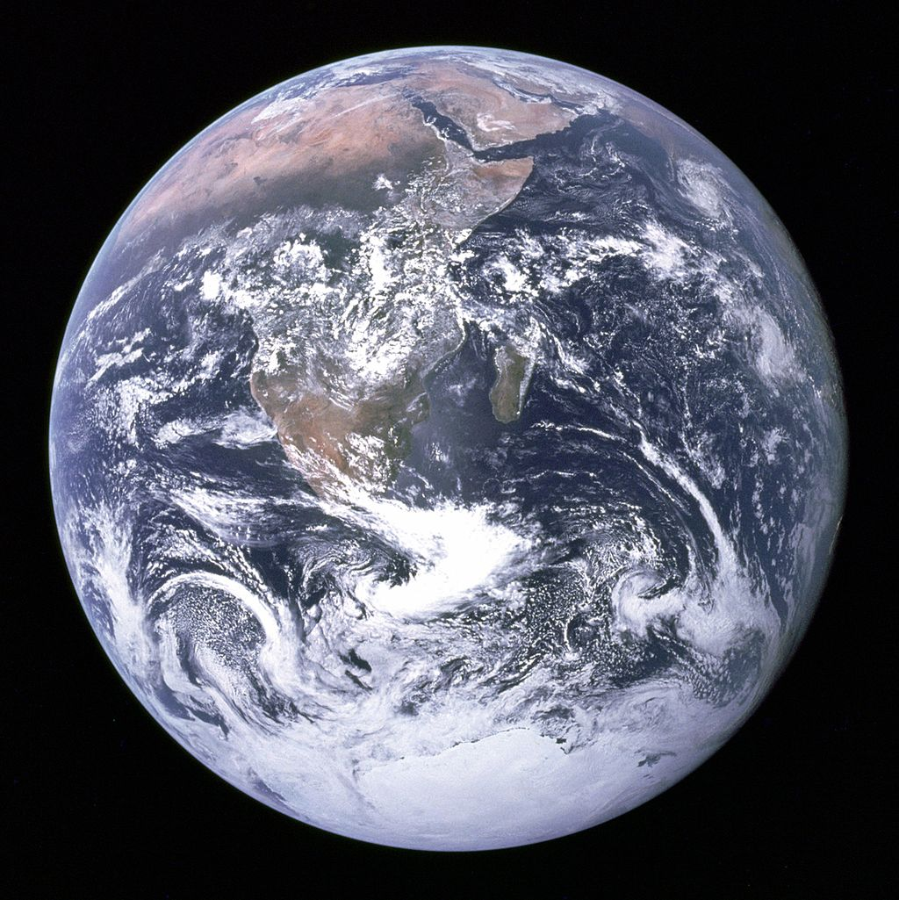
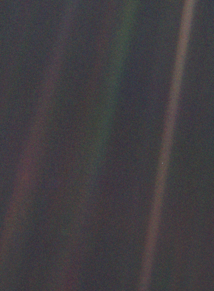

Pale Blue Dot
1 目录
| 序言 | 漂泊者 | Wanderers: An Introduction |
|---|---|---|
| 第一章 | 你在这里 | You Are Here |
| 第二章 | 光行差 | Abberations of Light |
2 序言
从一开头，我们就是漂泊者。自从人类出现以来，在 99.9% 的时间里我们都是猎人和采集者，也是在沙漠与草原上的流浪汉。那时没有边防卫士，也没有海关官员。到处都是待开发的土地。约束我们的只是大地、海洋和天空——加上偶尔碰到的粗暴邻居。在最近 1 万年间——这在我们的漫长历史中只是一瞬间——我们已经放弃了游牧生活。我们已经栽培植物和驯养动物。
We were wanderers from the beginning. For 99.9 percent of the time since our species came to be, we were hunters and foragers, wanderers on the savannahs and the steppes. There were no border guards then, no customs officials. The frontier was everywhere. We were bounded only by the Earth and the ocean and the sky - plus occasional grumpy neighbors. In the last ten thousand years - an instant in our long history - we've abandoned the nomadic fife. We've domesticated the plants and animals.
由于自然淘汰，精心培育起来的对事物的好奇心已成为我们赖以生存的基本要素。漫长的夏季、温暖的冬天、丰硕的收成、充足的猎物——哪一样都不能永久存在。我们没有能力预测未来。灾难事件惯常在我们不知不觉之中，偷偷地袭击我们。你自己的、你所在的群体的，甚至你的种族的生活，可能全靠少数不守本分的人来决定，被一种他们难以说清或理解的渴望，吸引到未曾发现过的土地或新的世界。
This appeal has been meticulously crafted by natural selection as an essential element in our survival. Long summers, mild winters, rich harvests, plentiful game - none of them lasts forever. It is beyond our powers to predict the future. Catastrophic events have a way of sneaking up on us, of catching us unaware. Your own life, or your band's, or even your species' might be owed to a restless few - drawn, by a craving they can hardly articulate or understand, to undiscovered lands and new worlds.
人类从旧世界向新世界的第一次大规模迁移，大约出现在 11,500 年前的最后一次冰期。当时极区冰盖扩大；导致海洋变浅，于是人们可以在陆地上从西伯利亚走到阿拉斯加。1000 年之后，有人到达南美洲的南端，即火地岛。远在哥伦布之前，印度尼西亚的英勇移民就驾着有桨的独木舟探测西太平洋，而来自明代中国的一支庞大的远洋帆船队在印度洋往返航行，绕过好望角，并进入大西洋。从 15 世纪到 17 世纪，欧洲的帆船发现新大陆，并环绕地球航行。在 18 世纪和 19 世纪，美国与俄罗斯的探险家、商人和移民，分别向西和向东跨越两个大洲，争着奔向太平洋。无论当事人可能是如何轻率无知，这种探险与开发的热忱具有明显的存在价值。它并不局限于一个民族或种族。它是全人类所有成员共有的天赋。人们的大规模迁徙——有的是自愿的，但大部分并不是——形成了人类的生存状况。今天我们中间逃离战争、迫害和饥荒的人，比人类历史上的任何时候都多。在今后几十年，随着地球上气候的演变，看来会有更大量的人因环境恶劣而逃亡。
The first large-scale human migration from the Old World to the New happened during the last ice age, around 11,500 years ago, when the growing polar ice caps shallowed the oceans and made it possible to walk on dry land from Siberia to Alaska. A thousand years later, we were in Tierra del Fuego, the southern tip of South America. Long before Columbus, Indonesian argonauts in outrigger canoes explored the western Pacific, and a great fleet of ocean going junks from Ming Dynasty China crisscrossed the Indian Ocean, rounded the Cape of Good Hope, and entered the Atlantic Ocean. In the 15th through 17th centuries, European sailing ships discovered new continents and circumnavigated the planet. In the 18th and 19th centuries, American and Russian explorers, traders, and settlers raced west and east across two vast continents to the Pacific. This zest to explore and exploit, however thoughtless its agents may have been, has clear survival value. It is not restricted to any one nation or ethnic group. It is an endowment that all members of the human species hold in common. Vast migrations of people - some voluntary, most not - have shaped the human condition. More of us flee from war, oppression, and famine today than at any other time in human history. As the Earth's climate changes in the coming decade. there are likely to be far greater numbers of environmental refugees.
我们的远古祖先观察星星；注意到有五颗星并不像所谓的「恒」星那样按刻板的方式升起和下落。这五颗星有奇特而复杂的运动。接连几个月，它们似乎是缓慢地在恒星之间游荡。它们有时绕出一个个圆圈。今天我们称它们为行星，在希腊文中这个词的意思是游荡者。
Our distant ancestors, watching the stars, noted five that did more than rise and set in stolid procession, as the so-called "fixed" stars did. These five had a curious and complex motion. Over the months they seemed to wander slowly among the stars. Sometimes they did loops. Today we call them planets, the Greek word for wanderers.
3 第一章
空间飞船已经远离家园，越过最外层行星的轨道，并高悬黄道面上空。飞船正以每小时时 64,000 千米的速度飞离太阳。但是在 1990 年 2 月初，它接到了来自地球的一个紧急指令。它恭顺地掉转照相机，指向现在已经相距很远的行星。它拍摄了 60 张照片，并在磁带记录器上以数字的方式把它们储存起来。然后在 3 月、4 月和 5 月，它缓慢地把数据用无线电波传回地球。空间飞船离地球 59 亿千米，远到每个象素以光速传播也要经过 5.5 小时才能为我们收到。
The spacecraft was a long way from home, beyond the orbit of the outermost planet and high above the ecliptic plane. The ship was speeding away from the Sun at 40,000 miles per hour. But in early February of 1990, it was overtaken by an urgent message from Earth. Obediently, it turned its cameras back toward the now-distant planets. It snapped 60 pictures and stored them in digital form on its tape recorder. Then, slowly, in March, April, and May, it radioed the data back to Earth. The spacecraft was 3.7 billion miles away from Earth, so far away that it took etch pixel 5.5 hours, traveling at the speed of light, to reach us.
两艘「旅行者」飞行器考察了 4 颗行星和将近 60 颗卫星，它们是人类工程技术的胜利，也是美国空间计划的一个荣誉。在当代许多别的事情被人遗忘的时候，它们仍将永垂史册。
The two Voyager robots have explored four planets and nearly sixty moons. They are triumphs of human engineering and one of the glories of the American space program. They will be in the history books when much else about our time forgotten. #+END_QUOTE
几乎每个人都学过，大地是一个圆球，我们都由重力吸附在它上面。然而我们所在世界的真实情景，却直到「阿波罗」对整个地球拍摄了一幅装满镜框的著名照片后才真正看清。这张照片是「阿波罗 17 号」的宇航员在人类最近一次飞往月球拍摄的。在这张照片上没有人类的迹象，看不出我们对地球表面的改造，也看不出我们的机器和我们自身。在行星的尺度上说（更不用谈恒星与星系了），人类是微不足道的，它只不过是在一块偏僻与孤独的岩石和金属混合体上面的一薄层生命。
While almost everyone is taught that the Earth is a sphere with all of us somehow glued to it by gravity, the reality of our circumstance did not really begin to sink in until the famous frame-filling Apollo photograph of the whole Earth - the one taken by the Apollo 17 astronauts on the last journey of humans to the Moon. There is no sign of humans in this picture, not our reworking of the Earth's surface, not our machines, not ourselves. On the scale of worlds - to say nothing of stars or galaxies - humans are inconsequential, a thin film of life on an obscure and solitary lump of rock and metal.

Figure 1: The Blue Marble
淡蓝色一部分来自海洋，一部分来自天空。虽然玻璃杯里的水是透明的，但它吸收的红光比蓝光稍多。如果你观察的是几十米或更深的水，红光被吸收掉了，反射到空中的主要是蓝光。绘画大师达·芬奇说得有点道理，物体越远，它看起来越蓝。因为空气向四周散射的蓝光远多于红光。地球光点的蓝色来自它的很厚的，但也是透明的大气层，以及它的由液态水组成的深海。
The blue comes partly from the sea, partly from the sky. While water in a glass is transparent, It absorbs slightly more red light than blue. If you have tens of meters of the stuff or more, the red light is absorbed out and what gets reflected back to space is mainly blue. Something Leonardo da Vinci excelled at portraying - the more distant the object, the bluer it seems. Because the air scatters blue light around much better than it does red. So the bluish cast of this dot comes from its thick but transparent atmosphere and its deep oceans of liquid water.
从那个远方的有利地点看来，地球似乎没有任何令人感兴趣的特点。但是对于我们，情况就不同了。再看看那个光点，它就在这里。这是家园，这是我们。你所爱的每一个人，你认识的每一个人，你听说过的每一个人，曾经有过的每一个人，都在它上面度过他们的一生。我们的欢乐与痛苦聚集在一起，数以千计的自以为是的宗教、意识形态和经济学说，每一个猎人与采集者，每一个英雄与懦夫，每一个文明的缔造者与毁灭者，每一个国王与农夫，每一对年轻情侣，每一个母亲和父亲，满怀希望的孩子、发明家和探险家，每一个德高望重的教师，每一个腐败的政客，人类历史上的每一个圣人和罪犯，都在这里——一个悬浮于阳光中的尘埃小点上生活。我们虚构的妄自尊大，我们在宇宙拥有某种特权地位的错觉，都受到这个苍白光点的挑战。在庞大的包容一切的暗黑宇宙中，我们的行星是一个孤独的斑点。
From this distant vantage point, the Earth might not seem of any particular interest. But for us, it's different. Look again at that dot. That's here. That's home. That's us. On it everyone you love, everyone you know, everyone you ever heard of, every human being who ever was, lived out their lives. The aggregate of our joy and suffering, thousands of confident religions, ideologies, and economic doctrines, every hunter and forager, every hero and coward, every creator and destroyer of civilization, ever king and peasant, every young couple in love, every mother and father, hopeful child, inventor and explorer, every teacher of morals, every corrupt politician, every saint and sinner in the history of our species lived there - on a mote of dust suspended in a sunbeam. Our posturings, our imagined self-importance, the delusion that we have some privileged position in the Universe, are challenged by this point of pale light. Our planet is a lonely speck in the great enveloping cosmic dark.

Figure 2: Pale Blue Dot
4 第二章
再一次回头那淡蓝色光点，竭力使你自己相信，上帝是为了居住在这粒尘埃上约 1000 万种生物中的一种而创造了整个宇宙。现在更进一步：设想一切事物都只是为了这种生物的个别生灵，或人类两性之一，或某种族或某宗教教派而创造出来的。如果这并不使你感到靠不住，那就另取一个光点吧。设想它上面居住着另一种形式的智慧生命。他们也坚持有一个上帝为他们的利益创造了一切。你对他们的主张会认真对待吗？
Look back again at the pale blue dot. Try to convince yourself that God created the whole Universe for one of the 10 million or so species of life that inhabit that speck of dust. Now take it a step further: Imagine that everything was made just for a single shade of that species, or gender, or ethnic or religious subdivision. If this doesn't strike you as unlikely, pick another dot. Imagine it to be inhabited by a different form of intelligent life. They, too, cherish the notion of a God who has created everything for their benefit. How seriously do you take their claim?
科学史中许多重大争议是与人类是否特殊有关。几乎总是这样，常常开始便假设我们是特殊的。然而对这个前提进行严格检验后，结果表明——往往会令人沮丧——我们并不特殊。
Many of the central debates in the history of science seem to be, in part at least, contests over whether humans are special. Almost always, the going-in assumption is that we are special. After the premise is closely examined, though, it turns out - in dishearteningly many cases - that we are not.
我们的祖先在露天居住。他们对夜空是熟悉的，就像我们大多数人对令人喜爱的电视节目一样。天体的运行不只是一种令人肃然起敬地点头和喷喷称道的规则，它还是确定时刻和季节的唯一办法。对猎人和采集者以及农业民族来说，观察天象是一桩生死攸关的大事。太阳、月亮、行星和恒星都是构造精美的宇宙时钟的一部分，这对我们是何等幸运的事情！看起来这不是偶然的。它们都为了一个目的，即为我们的利益而安装起来。既然太空中的发光体都绕着我们出没，难道我们是在宇宙的中心还不是显而易见的吗？我们的重要地位得到日常天象观测的证实。这种令人心满意足的论证，使地球是宇宙中心的想法成为超越文化的真理。天文学家托勒密在公元 2 世纪宣称地球「正是在宇宙的中心」，亚里士多德、柏拉图、圣奥古斯丁、阿奎那，以及在 17 世纪之前 3000 年间所有文明国家的几乎全部的伟大哲学家与科学家都有这种错觉。地心假说能够适当地说明在公元 2 世纪以及 16 世纪所知道的行星运动现象。
Our ancestors lived out of doors. They were as familiar with the night sky as most of us are with our favorite television programs. The motion of the heavenly bodies was not merely a diversion, eliciting a reverential nod and grunt; it was the only way to tell the time of day and the seasons. For hunters and gatherers, as well as for agricultural peoples, knowing about the sky was a matter of life and death. How lucky for us that the Sun, the Moon, the planets, and the stars are part of some elegantly configured cosmic clockwork! It seemed to be no accident. They were put here for a purpose, for our benefit. And if the lights in the sky rise and set around us, isn't it evident that we're at the center of the Universe? This satisfying demonstration of our importance, buttressed by daily observations of the heavens, made the geocentrist conceit a transcultural truth. The great astronomer Claudius Ptolemaeus (Ptolemy), in the second century taught that the Earth lay "right in the middle of the heavens." Aristotle, Plato, St. Augustine, St. Thomas Aquinas, and almost all the great philosophers and scientists of all cultures over the 3,000 years ending in the 17th century bought into this delusion. With later modifications, the geocentric hypothesis adequately accounted for the facts of planetary motion as known in the second century, and in the 16th.
在 16 世纪中叶，从哥白尼开始，一场辩论正式出现了。把太阳而不是地球当作宇宙中心的图象，被认为是危险的。许多学者被迫很快向教廷保证，这种新奇的假说对传统观念并不构成严重的威胁。作为一种平分秋色的折衷方案，可以把日心体系只当作便于计算的设想，而不是真正的天文现实。这样一来，你就可以继续作计算，而不触犯当局。
Beginning with Copernicus in the middle 16th century, the issue was formally joined. The picture of the Sun rather than the Earth at the center of the Universe was understood to be dangerous. Obligingly, many scholars were quick to assure the religious hierarchy that this newfangled hypothesis represented no serious challenge to conventional wisdom. In a kind of split-brain compromise, the Sun-centered system was treated as a mere computational convenience, not an astronomical reality. Then you could calculate away and not affront the Authorities.
17 世纪初期的神学家贝拉明写道：「信仰自由是有害的。它只不过是犯错误的自由。」
Robert Cardinal Bellarmine, the theologian in the early 17th century, wrote, "Freedom of belief is pernicious, It is nothing but the freedom to be wrong."
如果地球是在绕太阳运动，那么每隔 6 个月，我们的视线从地球轨道的一侧移到另一侧时，附近的恒星就会在更远恒星的背景上，看起来是在移动。但是没有发现过这种「周年视差」。哥白尼学说的支持者辩解说，这是因为恒星极为遥远——可能比地球离太阳要远出 100 万倍。也许将来更好的望远镜会发现周年视差。地心说学者们把这当作拯救一个有毛病的假说的一根可以抓住的稻草。到 1837 年，直接的观测用最明确的方式证明了地球确实绕日运转。争议已久的周年视差终于发现了，不是用更好的论证，而是用更好的仪器发现的。这是因为说清楚它的含义，比起解释光行差更为直截了当。周年视差的发现非常重要，它给地心学说的棺材敲进了最后一根钉子。
If the Earth was going around the Sun, nearby stars should seem to move against the background of more distant stars as, every six months, we shift our perspective from one side of the Earth's orbit to the other. No such "annual parallax" had been found. The Copernicans argued that this was because the stars were extremely far away - maybe a million times more distant than the Earth is from the Sun. Perhaps better telescopes, in future times, would find an annual parallax. The geocentrists considered this a desperate attempt to save a flawed hypothesis. Not until 1837 did direct observations of the stars prove in the clearest way that the Earth is indeed circling the Sun. The long-debated annual parallax was at last discovered - not by better arguments, but by better instruments. Because explaining what it means is much more straightforward than explaining the aberration of light, its discovery was very important. It pounded the final nail into the coffin of geocentrism.
5 人造飞行器
| 编号 | 历程 | 轨道 | 特点 |
|---|---|---|---|
| 先驱者 10 号 | 1972/03 发射 | 背向银河中心 | 携带先驱者镀金铝板 |
| Pioneer 10 | 金牛座毕宿五 | 1998/02 之前离地球最远的人造飞行器 | |
| 先驱者 11 号 | 1973/04 发射 | 朝向银河中心 | 携带先驱者镀金铝板 |
| Pioneer 11 | 1974/12 木星 | 天鹰座 | |
| 1979/09 土星（首次接近） | |||
| 旅行者 2 号 | 1977/08 发射 | 在黄道面中 | 携带旅行者金唱片 |
| Voyager 2 | 1979/07 木星 | 「最多产」的航天器 | |
| 1981/08 土星 | |||
| 0000/00 土卫六 | |||
| 1986/01 天王星（首次接近） | |||
| 1989/08 海王星（首次接近） | |||
| 旅行者 1 号 | 1977/09 发射 | 高于黄道面 | 携带旅行者金唱片 |
| Voyager 1 | 1979/01 木星 | 第一艘离开太阳系的人造飞行器 | |
| 1980/11 土星 | 1998/02 至今离地球最远的人造飞行器 | ||
| 0000/00 土卫六 | |||
| 1990/02 拍摄「暗淡蓝点」照片 | |||
| 伽利略号 | 1989/10 发射 | 首次围绕木星公转、对木星大气作出探测 | |
| Galileo | 1995/00 进入木星轨道 | ||
| 2003/09 坠落木星大气层 | |||
| 卡西尼－惠更斯号 | 1997/10 发射 | 惠更斯号进入土卫六大气并着陆 | |
| Cassini-Huygens | 2004/07 进入木星轨道 | ||
| 新视野号 | 2006/01 发射 | ||
| New Horizons | 2015/07 进入冥王星轨道 | ||
| 朱诺号 | 2011/08 发射 | ||
| Juno | 2016/07 进入土星轨道 |